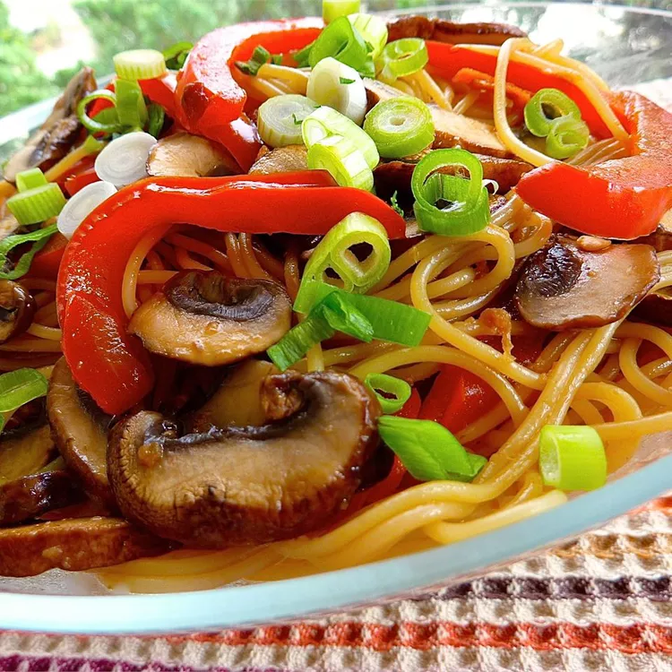

Home
Noodle Salad

This is a beautiful and flavorful salad with a fresh ginger dressing. The cap of the shiitake mushroom has a meaty flesh with a lot of flavor; reserve the tough stems for stocks. White or cremini mushrooms can be substituted. These are less expensive, but not as flavorful.
Ingredients
- 8 ounces capellini pasta
- ½ pound shiitake mushrooms
- 1 red bell pepper, thinly sliced
- ¼ cup rice vinegar
- 3 tablespoons soy sauce
- 1 tablespoon vegetable oil
- 1 teaspoon grated fresh ginger
- 1 tablespoon chopped fresh parsley
Steps
- Cook pasta in a large pot of boiling water. Meanwhile, clean, stem, and slice mushrooms. Add mushrooms and red bell pepper during last 2 minutes of cooking. Drain.
- In a small bowl, mix together vinegar, soy sauce, oil, and ginger.
- Transfer pasta, mushrooms, and pepper to a serving bowl; toss with ginger dressing. Sprinkle with parsley before serving.